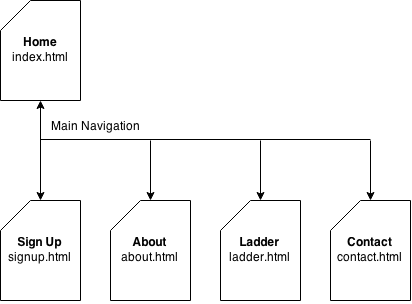

Name: Jamieson Baker
Login: jc280966
The purpose of this website is to drive new signups by engaging users who don't already play volleyball, particularly those in the younger demographic, The website will encourage users to think about volleyball differently and to get involved in a way that may be less intemdating than competative sport.
We will measure the success of the website by the tracking the number of new signups from our target audience. We will add a mandatory "age bracket" field to the online signup form to ensure we are collecting the necessary data to evaluate our success.
Our target audience is young people (high-school to young adults) who are not already involved in volleyball as a sport. As many young people now browse the internet on mobile devices, the website will be designed to be responsive and deliver our content effectively, regardless of screen size. We will use engaging language and iconography to capture the interest of the younger generation.
